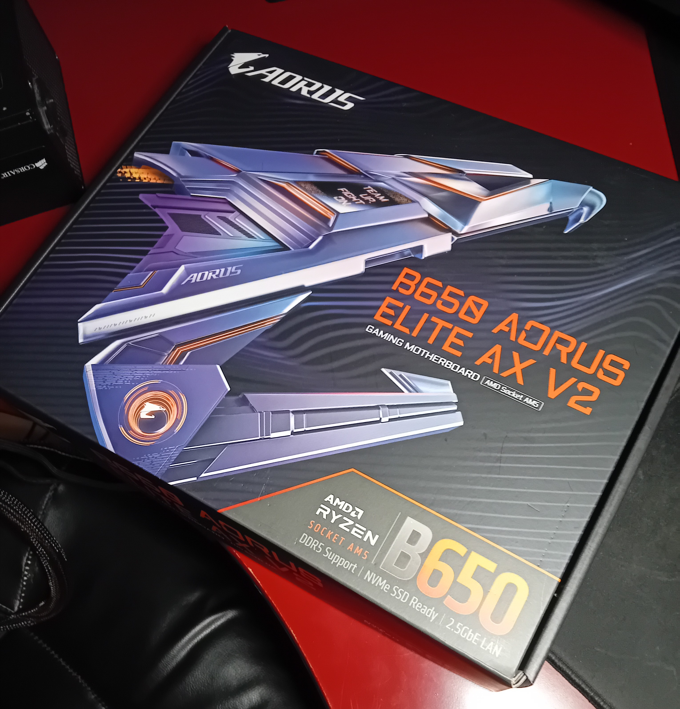
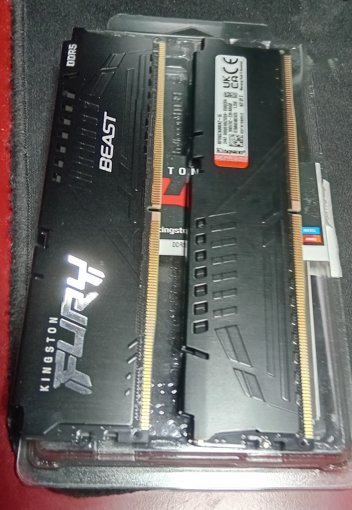
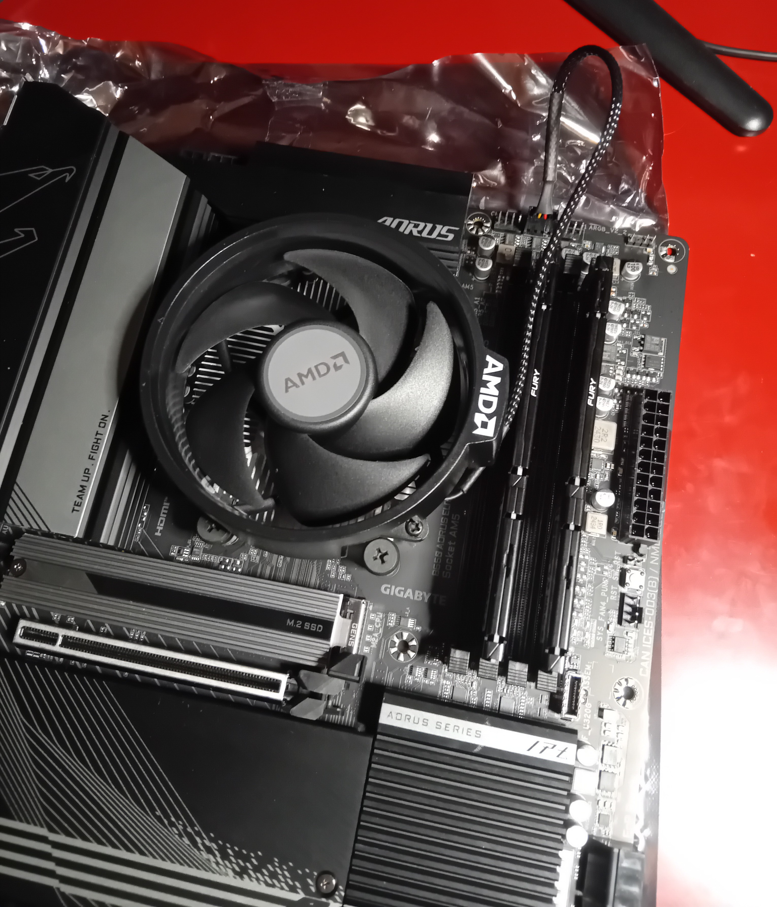
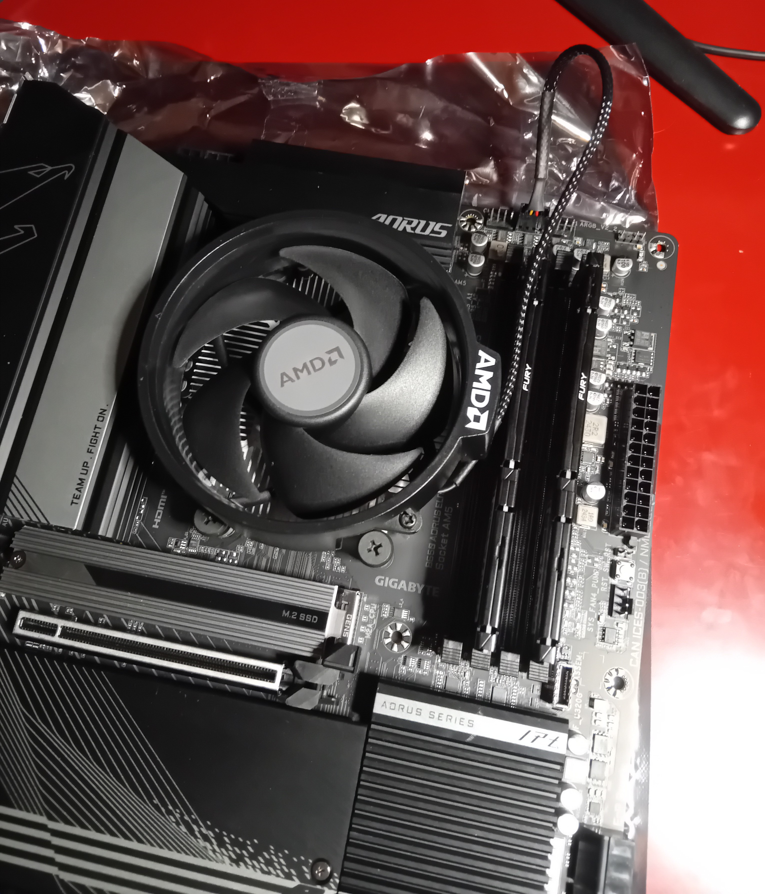
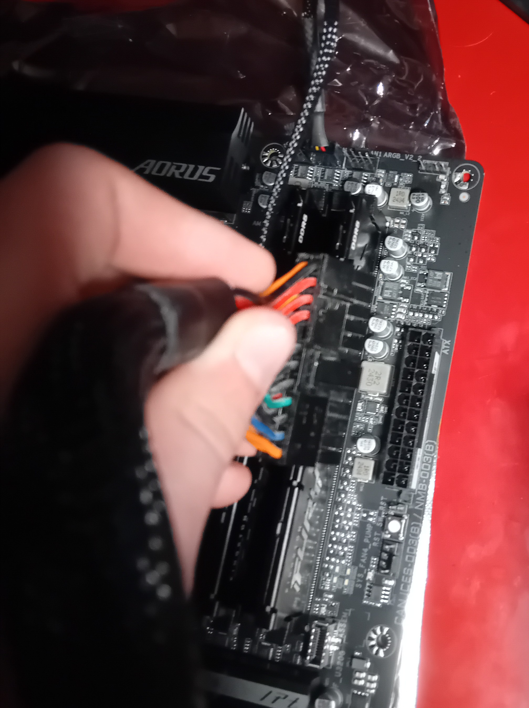
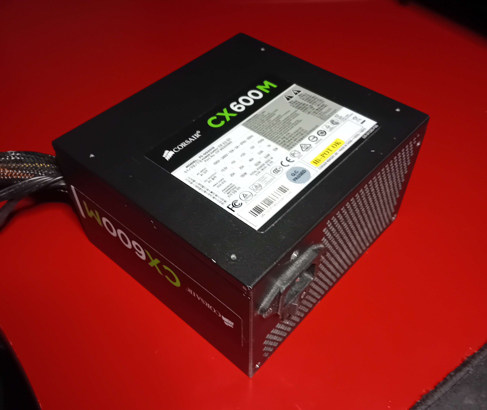

AMD PC building process
[Go Back] Published: Jan. 12th 2025
(ONGOING)
In this blog I am showing and talking about the process behind building my new pc.
This is the second PC that I've built from scratch. So im still kinda nervous because this PC is the first BRAND NEW computer that I've built.
Im gonna stop yapping and start to write the actual blog or whatever.



First I started by unboxing the motherboard which is the Gigabyte Aorus B650 Elite AX V2. Then I put in some nice new 8x2 DDR5 ram. Fun fact!: I've been drooling over these ram sticks for like a few months now since the rest of my computer took so long to actually ship. So now I can actually for the first time ever put in these "dedicated wam" sticks.
 

Then I unboxed the cpu which is the AMD Ryzen 7600. This was very scary since I've never handled such a expensive CPU ever in my whole life. But everything went smoothly. Except for the cpu fan that was actually pretty hard to put in until I realised that you needed to tighten the screws in a series and not individually. I know that was an awful explaination but I can't really explain it that well over text.


For the powersupply, I went with the old but gold CX600M. It might be from 2012 but it's not like it's in charge of something important anyway, like supplying power. It was super easy to install, just had to plug it into the motherboard atx power connector and the cpu power connector. So in short, I just plugged it in. I mean it's not rocket science, lol.
UNDER CONSTRUCTION...